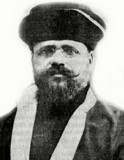

Hayim Naum (1873-1960)

Gizli anlaþmanýn entrikasý Türklere dinlerini ve din temsilciliðini feda ettirmek þartýyla, sun'î istiklâl iþinde gizli anlaþmanýn müessiri, tek kelime ile, Yahudiliktir. Buna memur-u müþahhas kimse de, þimdi Mýsýr Hahambaþýsý bulunan Hayim Naum'dur. Bu Hayim Naum, bu korkunç teþebbüse evvelâ Amerika'da Türkler lehinde bir seri konferans vermek ve emperyalizma þeflerine, Türkün maddesini serbest býrakmalarý, buna mukabil ruhunu, tâ içinden ve kendi öz adamlarýna yýktýrmalarý fikrini telkin etmek suretiyle baþlamýþtýr. Yani, masonluk hasebiyle Kur'ân'ýn ahkâmýný kaldýrmak, milleti dinsiz yapmak. Hayim Naum müthiþ plânýnýn zeminini Amerika'da hazýrladýktan sonra Ýngiltere'ye geçmiþ ve hâlis Yahudi olan Lord Gürzon ile temas ederek þu teklifte bulunmuþtur:"Siz Türkiye'nin mülkî tamamiyetini kabul ediniz. Onlara ben Ýslâmiyeti ve Ýslâmî temsilciliklerini ayaklar altýnda çiðnetmeyi taahhüt ediyorum."
Ayný Hayim Naum Türk murahhaslar heyetine müþavir sýfatýyla sokulmanýn da yolunu bulmuþ, yani Mustafa Kemal ve Ýsmet'i kendine dost bulmuþ. Onun için üçü birleþmiþ. Ve artýk arada santralýn intizamla iþlemesine hiçbir mâni kalmamýþtýr.
Hayim Naum o sýrada Ankara'ya kadar da uzanarak plânýn muvaffakiyeti için gereken en mühim ve merkezî þahýs nezdinde-yani Mustafa Kemal yanýnda-emin bulunduðu tesirinin derecesini ölçmek istemiþtir. Öyle ki, bu tesir, mahut mevzuda Hayim Naum'dan daha heveskâr ve gayretli bir Ýslâmiyet düþmanýna tesadüf etmekle muradýna ermiþ ve artýk Türkü içinden vurmanýn plânýný gerçekleþtirmek için her unsur tamamlanmýþtýr.
Ýþte bu ehemmiyetli vesika, tam tamýna Risale-i Nur tercümanýnýn kýrk küsur sene evvel hadis-i þerifin ihbarýna dair beyan ettiði hadiseyi tasdik ettiði gibi; ve Þeriat-ý Ahmediyeye ihanet eden o dehþetli þahsýn mühim bir kuvveti Yahudi olduðu, Yahudi olan Lord Gürzon ile Hayim Naum o ihbarýn hakikatýný gösterdiklerini ve yirmi beþ seneden beri Nurcularýn imhasýna keyfî kanunlarla dehþetli zulümlerin hikmetini tam gösteriyor.
Emirdað Lahikasý, s. 278
Osmanlý Devleti'nin son Hahambaþýsý olan Hayim Naum, ömrü boyunca çevirdiði entrikalarla ün yaptý. II. Abdülhamid, Ýttihat Terakki, Mütareke Yýllarý ve Cumhuriyetin kuruluþu aþamalarýnda, tüm iktidar deðiþikliklerinden zarar görmeden faaliyetlerini devam ettirdi. Hem itilaf hem de ittifak devletlerinin yetkilileriyle sýký bir þekilde görüþmelerde bulunacak kadar etkili olduðu gibi, arkasýnda büyük bir gücü bulunduran karanlýk bir þahýstý. Ýsmet Ýnönü ile çok yakýn bir iliþki içine girerek Lozan Konferansýnda danýþmanlýk yaptý.
Naum, 1873 yýlýnda Manisa'da doðdu (Kendisinin ifadesine göre, kimliðinde doðum tarihi 1878 olarak kaydedilmiþtir). 1893-97 yýllarý arasýnda Fransa'da eðitim gördü. Burada, Uygulamalý Yüksek Araþtýrmalar Okulu Dini Bilimler bölümünü bitirdi. Yaþayan Doðu Dilleri Özel Okulu'nda Farsça ve Arapça dilleri alanýnda eðitim görerek mezun oldu. Bu eðitimi sýrasýnda sürgünde bulunan Jön Türklerle yakýn temaslarda bulundu. Hayatý boyunca en büyük desteði, Yahudi-Alyans örgütünden gördü. Yaptýðý bütün çalýþmalarý ve giriþimleri rapor edercesine bu örgüte yazdýðý mektuplarý vasýtasýyla bildirdi. Bu amaçla neredeyse haftada birkaç kez mektup yazdýðýný görmekteyiz.
Bu büyük Yahudi örgütünün en önemli çalýþanlarý ve aktif üyeleri din adamlarýndan oluþuyordu. Ýlk baþlarda tutucu din adamlarý yerine ilerici hahamlarý desteklemek ve etkilerini arttýrmak maksadýyla kurulan ve kendilerini Siyonistlere karþý göstermelerine raðmen, özellikle Osmanlý Devleti'nin yýkýlmasýna paralel olarak Ýsrail Devleti'nin kurulmasý aþamalarýnda önemli etkilerde bulunduðu anlaþýlmaktadýr. (Esther Benbassa, Son Osmanlý Hahambaþýsýnýn Mektuplarý, Alyans'tan Lozan'a, trc. Ýrfan Yalçýn, Milliyet Y., 1998)
Fransa'dan döndükten sonra (1897) Alyans adýna fiili olarak çalýþmaya baþladý. Önce örgütün desteðiyle Ýstanbul'daki Haham Okulunda müstakbel kayýnpederi Abraham Danon'un yardýmcýlýðýna getirildi. Bu tarihten itibaren Yahudi cemaatinin yönetimini eline geçirmek için uygun zamaný kollamaya baþladý. Devlet kademelerinde etkili olmanýn önemli bir göstergesi olan Hahambaþýlýða geçmek için uðraþtý. Bu isteði, Alyans örgütü tarafýndan da benimseniyordu. On yýl boyunca cemaat içindeki basamaklarý bir bir çýktý. Bu arada örgütün izin ve yönlendirmeleriyle 1899 yýlýnda görev yaptýðý okulun yöneticisinin kýzýyla evlendi. (Son Osmanlý Hahambaþýsýnýn Mektuplarý, s. 22-23)
Naum, yükseliþine katkýda bulunacak her yola baþvurmaktan çekinmedi. Sultan'ýn kitaplýðýnda görev almaya çalýþtý. 1900-1904 yýllarý arasýnda Yüksek Ýstihkam ve Topçu Okulu'nda Fransýzca öðretmenliði yaptý. Aralarýnda Ýsmet Ýnönü'nün de bulunduðu öðrencilere ders verdi. II. Meþrutiyetin ilanýndan sonra, ileride istifade etmek üzere bazý subaylarla çok yakýn iliþkiler içinde bulundu. Nitekim, bu iliþkiler savaþ sonrasý dönem için önemli bir zemin oluþturacak, hem içerde hem de yurt dýþýnda geniþ çaplý faaliyetlerde bulunmasýna imkan saðlayacaktýr. (Son Osmanlý Hahambaþýsýnýn Mektuplarý, s. 24)
II. Meþrutiyetle birlikte Naum ve dolayýsýyla Yahudi örgütleri siyaset alanýndaki faaliyetlerine hýz verdiler. Yaptýklarý yayýnlarla Jön Türk hareketini desteklediklerini beyan ettiler. Alyans'in iþleri daha da geliþti. Devrin yöneticileriyle iliþkiler daha da hýzlandýrýldý. Bu arada Naum önce Hahambaþý vekili ve kýsa bir süre sonra da Hahambaþý seçildi (1909). Bu göreve geldikten bir süre sonra Edirne, Selanik, Ýskenderiye, Kahire, Þam, Beyrut ve Ýzmir'i içine alan geniþ kapsamlý bir geziye çýktý (1910).
Naum, Yahudilerin Filistin'e gidip yerleþmelerine, arazi satýn almalarýna önemli bir engel teþkil eden ve II. Abdülhamid tarafýndan uygulamaya sokulan "kýrmýzý pasaport" uygulamasýndan kurtulmak için giriþimlerde bulundu. Ýttihat ve Terakki bu uygulamaya Eylül 1913 yýlýnda son verdi. Diðer taraftan çok sayýda Yahudi'nin Osmanlý vatandaþlýðýna geçirilmesi için her türlü yola baþvurdu. Ýdarecilere baský kurma yoluna gitti ancak, baþarýlý olamadý.
Naum'un en büyük özelliklerinden birisi, kim olursa olsun iktidarda bulunan hükümetin adamý gibi davranmasýdýr. Sultan Abdülhamid devrinde saraydan yana, Ýttihat ve Terakki iktidarý boyunca Jön Türklerle beraber, Mütareke yýllarýnda mevcut hükümetin yanýnda, Kurtuluþ Savaþý'nda Kuva-yý Milliyeci'dir. Lozan'daki barýþ görüþmelerinde Türk heyetinin danýþmaný ve sonrasýnda M. Kemal'in adamýdýr. (Son Osmanlý Hahambaþýsýnýn Mektuplarý, s. 45) Ýþ bitiricidir, giriþimcidir, içte ve dýþta her hükümetle direkt baðlantý kurabilen, resmi sýfatý olmadýðý halde resmi görevli gibi hareket eden, din adamýndan çok diplomat, bürokrat, siyaset adamý, elçi...
Kendi ifadeleriyle ilk resmi görevi, Osmanlý Devleti ile Ýtilaf Devletleri arasýnda Çanakkale Savaþý öncesinde uzlaþmayý saðlamak. Ancak, Ýngiltere ve Fransa'nýn tekliflerinin aðýr bulunmasý ve Osmanlý Devleti'nin reddetmesi ile baþarýsýz olur. Güya, Osmanlý Devletinin içinde bulunduðu durum, "çatýþmanýn uzamasýný önleyebilecek bir barýþ görüþmesine uygun deðildir"(!) 1918 yýlýnda çýktýðý yurt dýþýnda, tarafsýz kesimleri Türk davasýna kazanmaya çalýþmaktadýr(!) Bu sebeple Fransýz ve Alman gizli servislerinin takibine uðrar. Bu maksatla Siyonist liderler ve Yahudi kökenli önemli kiþilerle görüþmeler yapar(!) (Son Osmanlý Hahambaþýsýnýn Mektuplarý, s. 47).
Naum'un, sinsi faaliyetleri hakkýnda çok önemli tespitlerde bulunanlardan birisi de Lozan görüþmelerindeki Türk heyetinde bulunan Rýza Nur'dur. Naum'un Londra ile Ankara arasýnda sürekli gidip gelmesi dikkat çekicidir. Görüþmeler devam ettiði sýrada Paris gazetelerinden birinde çýkan bir haberde Naum, "Merak edilmesin, Ýsmet benim ahbabýmdýr. Sözümden çýkmaz. Gider iþi düzeltirim" ifadeleriyle düþman tarafýna garanti verirken, arkasýndan, "Ben geliyorum. Ýþi düzelttim. Size mühim haberim var. Sakýn ben gelinceye kadar görüþmeleri kesmeyin" þeklinde bir telgrafý Ýsmet Ýnönü'ye yollar. Yani, Fransýz basýnýna göre Frenk taraftarý, Türklerin yanýnda Türk taraftarý!.. Rýza Nur, bu davranýþlar karþýsýnda öfkesine hakim olamadýðýný ve Hahambaþýnýn geliþi sýrasýnda gazete haberini kendisine fýrlattýðýný aktarmaktadýr.
"... herif dalevereye kalksa fena haþlayacaktým. Kalkmayýp bu tarzda dökülünce öfkem geçti. Gazeteyi kendisine verdim. Bu beyanatýn nedir dedim. Þapa oturdu. Herif kafa tutmuyor ki... hamur gibi yumuþak. Yalnýz, soðuk muamele ve çabuk defettim gitti." (Kadir Mýsýroðlu, Lozan Zafer mi, Hazimet mi?, Sebil Y., Ýstanbul 1971, s. 267-268) Rýza Nur, bütün tersleme ve kovmalarýna raðmen Naum'un Türk heyetinin yanýndan ayrýlmadýðýný, özellikle Ýsmet Ýnönü ile çok sýký-fýký olduklarýný sert ifadelerle dile getirmektedir. Ýnönü'yü ikaz ederek; bu kiþiden fayda gelmeyeceðini, fikir ve düþüncelerimizi, görüþmelerimizi anýnda karþý tarafa sýzdýrabileceðini nakletmektedir. Buna karþýlýk Naum'un Ýnönü'ye; bütün Ýngiliz ve Fransýz yöneticilerini tanýdýðýný, hepsinin ahbabý olduðunu, iþleri istediði gibi yaptýrabileceðini söylediðini, aktarýr.
Özellikle Lozan görüþmeleri sýrasýnda çevirdiði entrikalarla ilgili olarak, Risale-i Nur'da Büyük Doðu mecmuasýndan yapýlan "Lozan'ýn Ýçyüzü" adlý alýntý önemli bilgiler vermektedir. Naum, bir taraftan görüþtüðü kiþilerin adamýymýþ gibi hareket ederken diðer taraftan Ýslam aleyhtarlýðý faaliyetleri ile de dikkat çekici etkilerde bulunmuþtur. "Türklere dinlerini ve din temsilciliðini feda ettirmek þartýyla, sun'i istiklal iþinde gizli anlaþmanýn müessiri tek kelime ile Yahidiliktir. Buna memur-u müþahhas kimse de, þimdi Mýsýr Hahambaþýsý bulunan Hayim Naum'dur." Naum, Amerika'da önemli faaliyetler içinde bulunduktan sonra Yahudi kökenli Ýngiliz Lord Gürzon ile çok yakýn münasebetleri olup, þu teklifte bulundu: "Siz Türkiye'nin mülki tamamiyetini kabul ediniz. Onlara ben Ýslamiyeti ve Ýslami temsilciliklerini ayaklar altýnda çiðnetmeyi taahhüd ediyorum." Naum, dýþarýda bu faaliyetleri sürdürürken, Ankara'ya da gelerek Ýnönü ve M. Kemal ile dostluk kurdu. (Emirdað Lahikasý, s. 278)
Naum'un gizli faaliyetleri hakkýnda bilgi verenlerden bir tanesi de Rauf Orbay'dýr. Orbay, hatýralarýnda; "Ýsmet Paþa, anlaþýldýðýna göre, Lozan'da Ýngilizlerle bir nevi gizli ara buluculuk rolü oynayan, Ýstanbul'un Hahambaþýsý Hayim Naum Efendinin telkinleriyle, 'Hilafetin artýk ne þekilde olursa olsun Türkiye'de devamýna müsaade edilmeyip derhal atýlmasý lüzumu' fikrini tamamýyla benimsetmiþ bulunuyordu." (Lozan Zafer mi, Hezimet mi?, s. 276) tespitinde bulunmaktadýr.
Lozan görüþmeleri sýrasýnda müþavir, kâtip, gazeteci gibi sýfatlarla heyete dahil olan ve türlü hýrsýzlýklara, casusluklara adý karýþanlardan biri olan Naum, gösterdiði baþarýlardan ötürü kendisini destekleyen örgütü tarafýndan, Yahudilerce en büyük Hahambaþýlýklardan biri olarak kabul edilen Mýsýr Hahambaþýlýðýna terfi ettirildi. Lozan'dan sonra Türkiye'ye dönmeyen Naum, bundan sonra Mýsýr'da faaliyetini sürdürdü. Rýza Nur, Naum'u deþifre ederken para ve sahtekârlýk konusundaki özelliklerine de atýfta bulunmakta ve tek tek benzeri kiþiler hakkýnda bilgi vermektedir. (Lozan Zafer mi, Hezimet mi?, s. 320)
Rýza Nur'un iddialarýný, bizzat Naum'un hakkýnda övücü ifadelerle hayatýný konu alan ve yazýþmalarýný aktaran eser doðrulanmaktadýr. Bu iddialardan bir tanesi Ýttihat ve Terakkiye ait paralar ve belgelerin yurt dýþýna kaçýrýlmasý olayýdýr. Eserde, Naum'un Sadrazam Ýzzet Paþa tarafýndan, Ýtilaf Devletleri ile baðlantý kurmakla görevlendirildikten sonra 25 Ekim 1918 tarihinde özel bir yata binip Romanya'nýn Köstence Limanýna doðru yola çýktýðý belirtilmektedir. Ýþte bu sýrada çok miktarda altýn ve belgeler de kaçýrýlmýþtýr. Eserde, söz konusu paralarýn kaçýrýldýðýný reddetmenin aksine, Naum tarafýndan deðil de yakýn çevresinde bulunan bir Yahudi banker tarafýndan Ýsviçre bankalarýna transfer edildiði kaydedilmekte ve hýrsýzlýk tescil edilmektedir. (Son Osmanlý Hahambaþýsýnýn Mektuplarý, s. 49)
Naum, iddiaya göre Kemalistler tarafýndan yarý resmi bir görevle Paris'e gönderilmiþtir. Kendisinden istenen, etkili olduðunu iddia ettiði çevrelerle görüþerek Türk mücadelesine taraftar saðlamak, aleyhteki düþünce ve fikirleri izale etmek, Fransýz kamuoyunu rahatlatan faaliyetlerde bulunmaktý. (Son Osmanlý Hahambaþýsýnýn Mektuplarý, s. 50) Ancak, Naum, gittiði her yerde Doðuda bulunan Yahudilerle ilgili olarak görüþmelerde bulundu. Bu arada Türk tarafýnýn bir temsilcisi rolünü de amacýna ulaþmada basamak olarak kullandý. Nitekim, 1921 yýlýnda Amerika'da bulunduðu sýrada bizzat örgütü Alyans ile ilgili faaliyetlerde bulundu ve örgüt tarafýndan kendisine verilen görevi yerine getirdi. Ama, o Ankara'ya, her zaman Türklerin lehinde çalýþmalarda bulunmak üzere, yurtdýþýndaki dostlarýný Türk davasýna kazandýrmaya çalýþtýðýný, ifade etmekteydi. Bu giriþimleri sayesinde, 1900'lü yýllarda, Ýstihkam ve Topçu Okulu'nda öðretmenliðini yaptýðý Ýsmet Paþa'nýn Baþkanlýðýndaki Türk heyetlerine danýþman olarak eþlik etmeyi baþardý.
Naum, baðlý bulunduðu Alyans örgütünün baþkanýna düzenli bir þekilde mektup göndererek ayrýntýlý bilgiler verdi. 27 Nisan 1919 tarihli ve Ýstanbul'dan baþkanýna yazdýðý mektubunda dýþ baðlantýlarý hakkýnda önemli bilgiler vermektedir. "Ýtalyan temsilcileriyle iliþkilerim çok iyi. Savaþ sýrasýnda tapýnaklarýna, mezarlýklarýna, bankalardaki paralarýna bile el konmak istenilen Ýtalyan cemaatinin yararlarýný korudum... Amerika ile iliþkilerim hep çok iyi oldu... Amerika'ya dönmek için Filistin'den gelmiþ Amerika Yahudileri konusunda baþarýlý giriþimlerde bulundum... Türk ve Filistin Yahudilerini, Ermenilerin ve Yunanlýlarýn alýnyazýsýndan kurtarmama... (raðmen) beni hala Siyonizmin karþýtý olmakla suçluyorlar..." (Son Osmanlý Hahambaþýsýnýn Mektuplarý, s. 186-194).
Naum'un, Lozan sonrasý en büyük hedefi, artýk, Yahudi devletinin Filistin'de yeniden kurulmasý için Alyans adýna çalýþmaktý. Dolayýsýyla Ýstanbul'dan ayrýlarak Mýsýr'a taþýndý. 1925 tarihinden itibaren Mýsýr ve Sudan Hahambaþýlýðýna geçti. 1960 yýlýnda Kahire'de öldü.